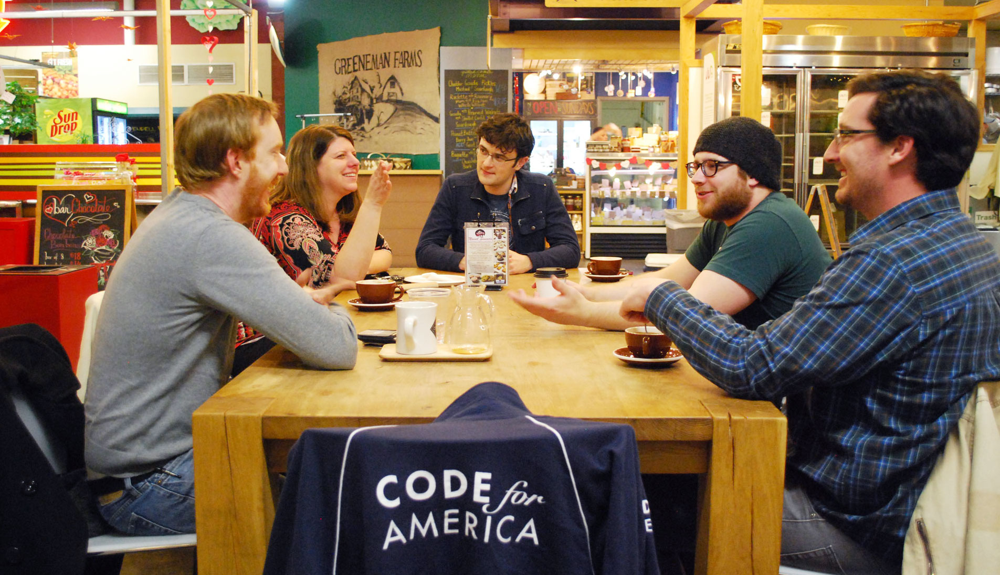

The Code for America team and the City of Charlotte have been working together for the past year to push towards several important outcomes. Working hand-in-hand with both the Innovation & Technology Department and the Neighborhood & Business Services Department to further the City Manager’s mission of community and citizen engagement, we:
When we arrived in Charlotte, the City had already begun preparing for the Fellowship and advancing a culture of of innovation by hosting a robust and comprehensive ideation session with over 60 city employees in January. As we conducted our discovery period during February through 40+ face-to-face meetings and gathered our own ideas, we started to see patterns and groupings amongst all of the topics. Together with our City partners and the Code for Charlotte Brigade, we distilled over 300 ideas into several key categories. They included: Process Improvements, Citizens as Field Agents, Engagement Interfaces, Neighborhoods, Employee Engagement, Capital Improvement Projects, Planning, Inequality, Environment, and Transparency and Open Data.
Also in January, the civic community in Charlotte exploded in an auspicious launch of the Brigade. Over the past eleven months, we’ve had the privilege of watching and supporting the growth of the Brigade to over 270 local members under the leadership of Jim van Fleet and Jill Bjers.
In 2013 the City had already advanced work on a Open Data Policy and an Open Data Portal. The City recognized the value of transparency and that data in many departments was not always easily accessible. The goal of these efforts was to help open up these data sets for both internal city use and public access. Throughout the course of this year, the efforts around open data paralleled ours as together we City staff to understand not only the value of open data, but its wealth of effects and possibilities for citizen engagement.
Overall, the timing was ripe for the Code for America fellows to enter and partner with the City on a variety of engagements.
We’ve spend the past eleven months working with the City of Charlotte on our main project, Citygram. Citygram is a platform for citizens to subscribe to their city, powered by open data.
We learned so much from being inside City Hall, but we also made sure to spend time with Charlotte community members outside of City Hall. (Special thanks to the Knight School of Communication for helping to facilitate our interviews with Charlotte community members.) As we spoke to Charlotteans who were leaders of their neighborhoods, we found our conversations often centered around the following questions:
And we heard:
What we realized is that even the most engaged community members had to go and seek out this information from a smattering of discrete channels in order to discover what was important to them and their neighborhood. At the same time, we saw from our discussions with departments that the City had so much rich data about plans and topics and events related to these exact questions. If the City had so much data, and citizens wanted to know, what could we do to address the gap and align the need with the City Manager’s community engagement strategy?
After researching the space with the Innovation & Technology and Corporate Communications departments, we found that the City of Charlotte is communicating with their citizens in a lot of different ways, but gaps still existed. We saw an opportunity to help citizens better understand what’s going on in their area. By providing timely information to citizens in areas that are relevant to them, the City could be proactive instead of reactive, build trust through transparency, and increase civic engagement across the board.
This opportunity dovetailed nicely with the City’s simultaneous push for open data. If Charlotte has a rich array of data that’s not easily discoverable, how can we make raw data not only open, but also meaningful to people? Even more importantly: how could we connect Charlotte’s two strategic initiatives, open data and citizen engagement? How can open data be a platform for community engagement?
Citygram is a geographically-relevant non-emergency notifications platform that is powered by open data. It allows citizens to designate geographic area(s) they are interested in, subscribe to specific topics, and receive information when something they’ve subscribed to happens in their area.
With Citygram, citizens can choose a topic of interested (which is powered by a department’s open data feed), enter an address (perhaps home or work), select the area that’s important , and decide how to be notified (text message or email). Citizens can also take a peek at recent events in their areas of interest, and get a sense for the frequency of notifications for the area selected.
Citygram is a web application that connects to the City's open data platform, and is designed to work with any open government data. A citizen designates area(s) of a city they are interested in and subscribes to one or more topics, and when an event for a desired topic occurs in the subscriber's area, a notification (email, SMS, or webhook) is delivered. To create the notifications, the application regularly checks for new data and transforms it into human speak according to a customizable template. See additional technical documentation on GitHub here.
During the second half of the year, Citygram became a shared project of two teams. The Lexington team (Livien Yin, Erik Schwartz, Lyzi Diamond) encountered similar needs and challenges with location-relevant open data in Lexington, and offered indispensable and complementary skill sets and perspectives. As such, the Charlotte team joined forces with the Lexington team to drive the development of Citygram.
In July, we embarked on a sequence of user research efforts to push the project forward while departments in Charlotte were working to make their data open and available for Citygram to consume. We conducted a three-week user test in Seattle with the help of the Code for Seattle brigade, which helped us to understand the end-to-end experience of receiving notifications from open data. Soon after, we conducted a follow up three-week user test in Lexington, to answer outstanding use case questions and usability questions.
The close collaboration and the learnings that ensued became one the richest growing experiences of the year for both teams. The Charlotte team would like to extend their appreciation to the Lexington team -- without them, Citygram would not be where it is today.
We learned an incredible amount from the challenges we encountered while carrying out our work in the city, from both a product and a government perspective.
The launch of Citygram in Charlotte is scheduled to coincide with the launch of the City’s Open Data Portal on December 15, 2014, as a demonstration project of the value of open data. As such, we do not yet have metrics on usage and engagement of Citygram in Charlotte specifically.
We do, however, have evidence of an overwhelming amount of community interest in Citygram. Since Charlotte’s presentation at the Code for America Summit in late September, over thirty individuals (both brigades and local governments) have declared interest in Citygram. BetaNYC, the New York brigade, forked their own Citygram.nyc less than three weeks after the Summit and has presented it in city council testimony to argue for the need and value for open data. Brigades in San Francisco, Salt Lake City, Tulsa, and the municipalities of St. Louis, St. Paul, Houston, and Denton, TX are among the parties who have reached out, clamoring for a way to bring Citygram to their city.
Moving forward, we’re proud to say that Citygram in Charlotte will be maintained and supported by the Code for Charlotte Brigade. Our team and the City of Charlotte built the architecture of Citygram with an eye towards scalability across cities, and we hope for further exploration of Citygram as a product. There is still a plethora of unanswered questions, including:
Deeper, more focused user research and development of features (for example, the ability for citizens to reply to notifications as a way to engage in a relevant conversation with their city) will be necessary to answer those questions. Continued work by Code for America on Citygram would allow the opportunity for the application to flourish and self-define as a product that is available for brigades, communities, and governments alike.
The Welcome Wagon project, one of our side initiatives as described in our mid-year report, began as a way to help new Charlotteans connect to their neighborhood organization. Since almost every new Charlotte resident moving in must turn on their water by calling 311, we saw a great opportunity for Charlotte’s Utilities and 311 departments to leverage their existing workflow and play a key role in putting citizens in touch with their neighborhood groups as a “welcome” to the city.
Through the many discussions that were needed to kickstart this project, the process and deliverables became diluted as the year went on. A variety of factors contributed to this, including: stakeholder misalignment, technical constraints of legacy systems, lack of ownership from a single department, timing and bandwidth from stakeholders, and concerns around geographic coverage and contact information privacy.
Instead, we’ve focused our efforts on helping support a draft of the Welcome Letter, as well as an improved intake process for the Neighborhoods Organization Contact List -- which will hopefully become linked in a citizen welcome process in the near future. We’re disappointed that the opportunity for this project to fully come to fruition during our fellowship year has passed, but we remain optimistic that we’ve sowed the seeds for a successful collaboration between Neighborhood & Business Services, Corporate Communications, CharMeck 311, and Charlotte-Mecklenburg Utilities to take the welcome project forward.
It’s been quite a learning journey, and the words of encouragement along the way has helped us to remember why we do what we do, especially during the tougher moments.
As the City of Charlotte continues to establish a culture of innovation, we offer these eight concluding recommendations to sustain, maintain and grow their innovation environment for the future:
We’d like to thank everyone from the City of Charlotte and Mecklenburg County who helped to make our work possible this year. We are especially grateful to Twyla and Tom, who believed in us, and who believed in Code for America’s mission: that government services can be simple, effective, and easy to use, and that government can work for the people, by the people in the 21st century.